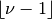
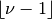
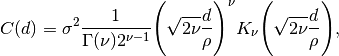
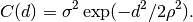
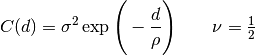
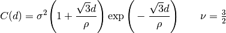
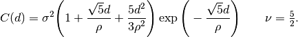
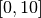

Correlation models¶
One of the main components of skgp is an extended set of correlation models (kernels). These extended correlation models are dicussed in the following.
Distances¶
- skgp ships different models of distance that can be learned from data and that can be used within most of the kernels. Three different distance models, which differ in the number of free parameters and thus their capacity to adapt to the data, are provided:
- Isotropic: a global length scale is learned from data. This means only one parameter is learned but also that different length scales in the different dimensions of the data cannot be identified and exploited.
- Automatic relevance determination (ARD): every dimension gets its own characteristic length scale, irrelevant dimensions can be effectively pruned away. This is also called “anisotropic” distance. The number of parameters is equal to the dimensionality of the data.
- Factor analysis distance (FAD): A low-rank approximation of a full covariance matrix for the distance is learned. Correlations between different dimensions can be identified and exploited to some extent. The number of free parameters corresponds to the number of dimensions times the desired rank of the matrix.
See Rasmussen and Williams 2006, p107 for details regarding the different variants. In an experiment, we compare the three distances when combined with the squared exponential kernel. The target function maps a 4-dimensional vector onto a real value. One of the dimensions is ignored (and should thus be pruned away by ARD). The other dimensions are correlated, which can be exploited by FAD. Learning curves for different distance models are shown in the following figure:

As can be seen, in this example the more complex and flexible models perform considerably better. This need not always be the case as a more complex model might also overfit to the data at hand. However, if redundant or irrelevant dimensions are to be expected, a more adaptive distance measure typically pays off.
Matérn kernel¶
The class of Matérn kernels is a
generalization of kernels like the squared or absolute exponential kernel. It
has an additional parameter  which controls the smoothness of the
Gaussian process resulting from this kernel: a Gaussian process with Matérn
covariance has sample paths that are  times
differentiable. The general functional form of a Matérn for distance
which controls the smoothness of the
Gaussian process resulting from this kernel: a Gaussian process with Matérn
covariance has sample paths that are  times
differentiable. The general functional form of a Matérn for distance  is given by:
is given by:

As  , the Matérn kernel converges to the squared
exponential kernel, i.e.,
, the Matérn kernel converges to the squared
exponential kernel, i.e.,

When  , the Matérn kernel becomes identical to the absolute
exponential kernel, i.e.,
, the Matérn kernel becomes identical to the absolute
exponential kernel, i.e.,

Further important special cases are

and

See Rasmussen and Williams 2006, pp84 for further details regarding the
different variants of the Matérn kernel. In particular,  and
and
 are popular choices for learning functions that are not
infinitely differentiable (as assumed by the squared exponential) but at least
once () or twice differentiable (). This is a
common case for real world data.
are popular choices for learning functions that are not
infinitely differentiable (as assumed by the squared exponential) but at least
once () or twice differentiable (). This is a
common case for real world data.
The following graphic illustrates learning curves for different variants of the Matérn kernel. The target function is a twice differentiable function which is created by fitting a spline to randomly sampled data over the interval :

As can be seen, neither the squared-exponential kernel (being too smooth) nor the absolute exponential kernel (being to rough) are good choices here. In contrast, the Matérn kernel with (assuming correctly that the function is twice differentiable) performs considerably better. Also, the Matérn kernel with is only slightly worse.